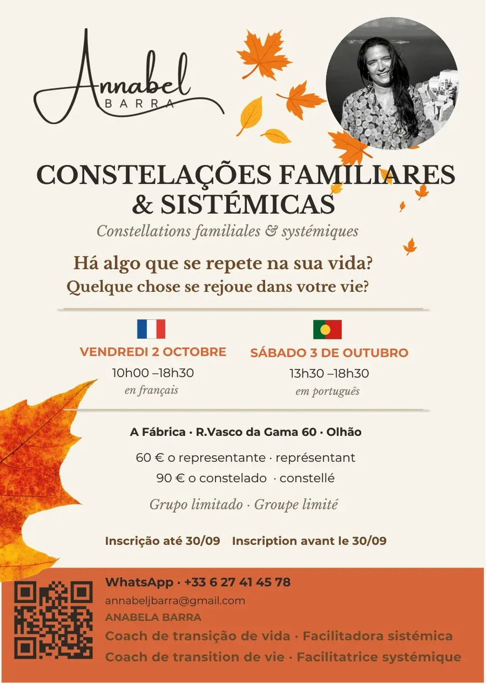
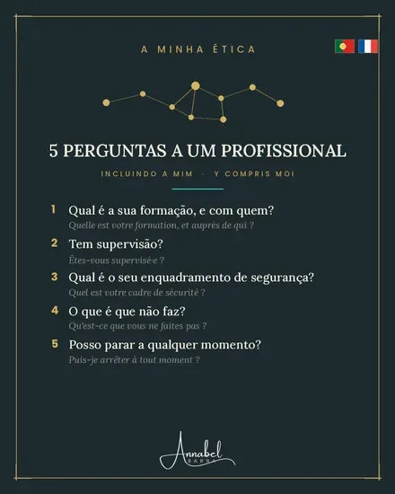

🇫🇷 Français · 🇵🇹 Português · 🇬🇧 English · 🇪🇸 Español — sur demande
Nomad coach · Facilitation & ingénierie de formation
Seul on survit.
Ensemble on se transforme.
Parcours de transition · Constellations · Intelligence collective
Ce que je fais : accompagner des personnes, des groupes et des équipes dans ce qui bouge, ce qui bloque, ce qui cherche à se dire.
À la une

« Quelque chose se rejoue dans votre vie ? »
Coach · Facilitation & ingénierie de formation
Ancienne dirigeante d'entreprise, franco-portugaise. J'accompagne les personnes et les équipes dans leurs transitions depuis plus de 20 ans — avec rigueur, bienveillance, et les outils justes.
Algarve & PACA
Mes offres d'accompagnement
Seul on survit. Ensemble on se transforme.
Un parcours en groupe de taille réduite — pour traverser une transition avec méthode et soutien.
↳ Reconversion · Burn-out · Mission de vie · Prise de poste · Rupture
Ce qui se répète a souvent une origine.
Un espace de travail incarné, en groupe, pour mettre en lumière ce qui opère en dessous.
↳ Difficultés financières · Schémas relationnels · Conflits familiaux · Blocages inexpliqués
L'intelligence est dans le groupe.
Des ateliers participatifs pour faire émerger l'intelligence du collectif et avancer ensemble.
↳ Prises de décision · Cohésion · Blocages collectifs · Vision commune
Pour les organisations
Ce qui coince en entreprise, c'est rarement ce qu'on croit.
J'accompagne les équipes et les dirigeants à aller voir là où ça se joue vraiment.
Ce que j'accompagne
Formats
Suivi individuel de manager — sur plusieurs mois
Intelligence collective (IC), CNV, co-développement
Mission, vision, culture d'entreprise — sur mesure
Prévention des RPS, soft skills, communication — ingénierie sur mesure : programme, progression, supports, évaluation
Déclaration d'activité de formation (NDA) en cours d'enregistrement auprès de la DREETS PACA.
Ce que ça change pour vous
Vos équipes se parlent vraiment — moins de non-dits, plus de coopération concrète.
Vos managers tiennent leur posture dans les moments difficiles.
Votre organisation avance avec une vision partagée et une direction commune.
Ils ont franchi le pas
Avis d'anciens stagiaires · 4,8 / 5 sur Anotea, plateforme publique officielle
Annabel est une formatrice remarquable dotée d'une profonde intelligence émotionnelle (IE). En se positionnant en guide plutôt qu'en "formatrice", elle a su faire émerger une puissante énergie de groupe et nous permettre de réaliser un profond travail d'exploration.
C'était le moment pour moi de tester le coaching sans trop savoir ce que c'était. L'écoute, l'empathie et les valeurs portées par Annabel ont levé tous mes doutes. Sa capacité à entendre ce que l'on n'ose pas exprimer verbalement est indispensable.
Elle est une véritable tisseuse de liens. Nos échanges m'ont permis de me reconnecter à moi-même dans une version plus proche de mes valeurs.
J'ai eu la chance de partager une année émotionnelle en groupe piloté par Annabel. Elle a réussi à m'accompagner et à changer la vision des choses. Ça me permet, encore aujourd'hui, de réfléchir et d'agir sur une base beaucoup plus positive.
J'apprécie travailler avec Annabel. Elle m'a beaucoup apporté sur le plan professionnel et par extension sur le plan personnel. Je la recommande sur tous les volets de son offre.
Merci pour cette journée qui restera à jamais dans ma mémoire. C'était fantastique, beaucoup d'émotions sont passées. Se sentir dans un lieu aussi sécurisant, grâce à la facilitatrice… Le respect de chacun envers tous, en sachant que ce qui est dit et fait reste entre nous : cela donne envie de recommencer en octobre. À bientôt !
Une extraordinaire formatrice, bienveillante, toujours disponible, à l'écoute de chacun pour un groupe de 14 personnes. Mon projet professionnel s'est concrétisé. Elle m'a fait changer de lunettes et m'a appris à oser entreprendre.
Une expérience humaine qui permet de s'ouvrir encore plus aux autres et à soi-même — ou comment pouvoir nommer ces qualités et compétences que nous possédons, avec des mots choisis et justes.
Places limitées
Constellations familiales & systémiques · A Fábrica · Vendredi 10h00–18h30 · Samedi 13h30–18h30
Vendredi–Samedi
2–3 octobre 2026
Vendredi en français · Samedi en portugais · Places limitées
Vendredi–Samedi
6–7 novembre 2026
Places limitées · Algarve
Décembre 2026 · À confirmer
Date à confirmer
Algarve
Ateliers Intelligence collective (IC) · A Fábrica · Jeudi · 19h–22h
Jeudi
5 novembre 2026
Algarve
Décembre 2026 · À confirmer
Date à confirmer
Algarve
France · Algarve & PACA
Dates sur demande
Je me déplace pour faciliter vos groupes existants
Mon éthique
Le cadre & le consentement
Vous pouvez dire non, vous arrêter, ou simplement observer.
Confidentialité totale, non-jugement, respect du rythme. Tout ce qui est partagé dans l'espace reste dans l'espace — sans exception. On donne et on reçoit, chacun à son rythme.
Ma posture
Je ne suis pas là pour vous dire quoi faire ni où aller.
Je tiens le cadre, je respecte votre rythme, et j'accompagne votre propre mouvement — pour que ce que vous trouvez, vous puissiez vraiment le vivre et l'incarner. Le but est que vous n'ayez plus besoin de moi.
Ce que ce n'est pas
Pas de recette, pas de méthode unique.
Je ne pose pas de diagnostic et ne prescris rien. Ce n'est pas de la thérapie médicale. Je m'adapte à ce que vous êtes, à ce que la situation demande — et on avance à votre rythme.
« Un accompagnant qui vous dit quoi faire vous rend dépendant. Un accompagnant qui vous aide à voir vous rend autonome. »
« Comprendre n'est pas excuser. Et accuser n'a jamais libéré personne. »
« Ce n'est pas un argumentaire. C'est un engagement. »

Gratuit
Le champ de l'accompagnement est peu encadré. Ces cinq questions vous donnent de quoi choisir en confiance — et vous protéger.
·Les 5 questions à poser avant de choisir un praticien — y compris moi.
Carte bilingue FR & PT · Gratuit · Immédiat
Questions fréquentes
Le coaching travaille principalement dans le présent — clarifier un cap, développer des ressources, passer à l'action. La constellation travaille le système : elle explore ce qui vient de plus loin, les dynamiques familiales ou organisationnelles qui influencent sans qu'on en soit conscient. Les deux se complètent souvent.
Pas nécessairement. Beaucoup de personnes viennent avec un sentiment diffus — quelque chose coince, se répète, ne se débloque pas malgré tous leurs efforts. C'est suffisant. On n'a pas besoin de tout comprendre avant de commencer.
Les deux. Je travaille couramment en français et en portugais (européen). L'anglais et l'espagnol sont possibles sur demande.
Oui — le coaching individuel et certains formats de groupe se font en ligne (Zoom). Les constellations se font de préférence en présentiel, mais des formats hybrides sont possibles selon les besoins.
Un appel de 20 minutes, sans engagement, pour que vous puissiez poser vos questions et que je comprenne ce que vous traversez. Si le format correspond, on construit la suite ensemble.
Oui. Sans condition, sans justification. C'est un droit, pas une faveur accordée.
Entrons en contact
Un appel de 20 minutes, sans engagement. Pour vérifier que le format vous correspond et réserver votre place si c'est juste.
Basée entre Avignon (France) et Olhão (Algarve, Portugal) — et je me déplace.
Laissez-moi un message
Mentions légales
Annabel Barra · Auto-entreprise · Siège : 945 les Crottes, 84190 Beaumes-de-Venise, France · SIRET 890 379 514 00023 · NIF 223 550 370 (Portugal) · annabel-barra@gmail.com · +33 6 27 41 45 78 · Directrice de la publication : Annabel Barra · Hébergement : GitHub, Inc., 88 Colin P. Kelly Jr. Street, San Francisco, CA 94107, États-Unis
Nature des accompagnements
Les constellations et le coaching sont des approches de développement personnel — ni diagnostic ni traitement médical. Tout trouble psychique relève d'un médecin reconnu.
Données personnelles · RGPD
Responsable de traitement : Annabel Barra. Les données du formulaire (nom, e-mail, téléphone, message) servent uniquement à répondre à votre demande et transitent par Formspree (États-Unis, clauses contractuelles types). Elles sont conservées 3 ans après le dernier échange, puis supprimées. Aucune revente ni transmission commerciale. Vous disposez d'un droit d'accès, de rectification, d'effacement, de limitation et de portabilité — écrivez-moi. Réclamation possible auprès de la CNIL (France) ou de la CNPD (Portugal). Ce site ne dépose aucun cookie.